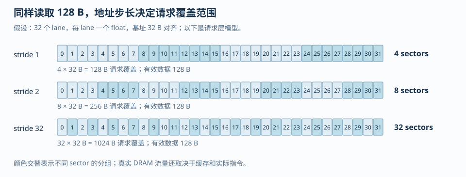
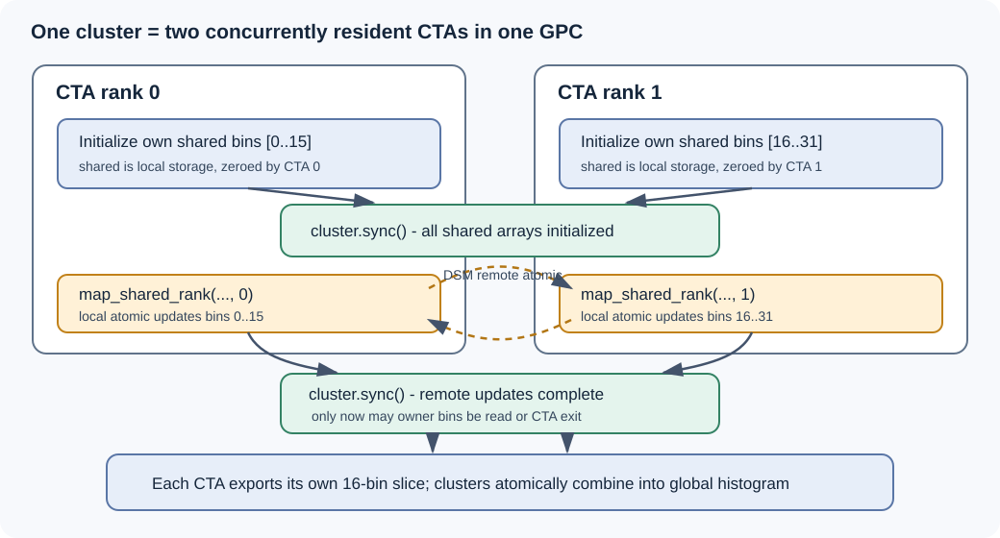

第 3 章：寄存器文件、地址空间与内存系统#
C++ 的局部作用域描述变量在哪里可见，CUDA 地址空间描述谁能访问，编译器和硬件决定它最终如何存放。一个局部数组可能留在寄存器，也可能因动态索引或寄存器压力使用 local memory。
矩形转置把三类问题集中到一个例子里：global memory 的跨步访问、shared memory 的 bank conflict，以及尾块的协作装载。比较 naive 与带 padding 的 tiled 实现，可以逐层检查地址、同步和资源消耗。
1. 先把“变量在哪里”拆成五个问题#
在 CUDA C++ 中，下面五个问题的答案不同。
- 变量的语义所有者是谁：整个 grid、一个 block、一个 warp，还是单个 thread？
- 变量的逻辑地址空间是什么：global、shared、constant、local，还是寄存器候选？
- 编译器能否把它拆成标量、常量传播、消除或重新安排？
- 它的值在多长的活跃区间内必须保留？
- 生成的机器码最终用了多少物理寄存器、多少 local stack/frame，以及哪些 load/store？
例如：
__global__ void one_value(const float* x, float* y) {
int i = blockIdx.x * blockDim.x + threadIdx.x;
float a = x[i];
float b = a * 2.0f;
y[i] = b + 1.0f;
}a、b 的语义是每个 thread 一份，不能被另一个 thread 直接读；但这不等于它们一定各占一个物理寄存器直到 kernel 结束。若编译器把 b 直接融合进乘加，a 的活跃区间可能在计算后立刻结束。若 a 只被使用一次，编译器甚至可能把 load、乘法和 store 重新安排为更短的链。相反，下面的代码要求很多中间值同时存活：
__global__ void long_live_values(const float* x, float* y, int n) {
int i = blockIdx.x * blockDim.x + threadIdx.x;
if (i >= n) return;
float p0 = x[i] + 0.0f;
float p1 = p0 * 1.1f;
float p2 = p1 + 2.0f;
float p3 = p2 * 1.2f;
float p4 = p3 + 3.0f;
y[i] = p0 + p1 + p2 + p3 + p4;
}这里的 p0 到 p4 可能被编译器优化掉一部分，但从源码结构看，它们之间存在一条较长的数据依赖和一个末端汇合点，寄存器压力通常比第一段更高。工程上不能只看“声明了几个变量”，要看 ptxas 报告的 registers/thread、local memory，以及 SASS 中是否真的出现了 local load/store。
寄存器是线程私有的片上存储；local memory 也是线程私有的地址空间，但物理访问可能经过设备内存路径。寄存器、shared memory 和 block/warp 数量共同限制驻留量。“local”描述作用域，不代表低延迟。
2. 32-bit 计量：寄存器不是按源码变量数计费#
CUDA 的寄存器资源通常以 32-bit register 为计量单位。一个 float 或 int 的标量候选通常需要一个 32-bit register；double、64-bit pointer、long long 会占用多个 32-bit 单位；向量、结构体和编译器生成的临时值还可能被拆成更多标量。真正决定一个 block 能否同时驻留的是类似下面的资源账本：
它还要经过架构相关的分配粒度和每个 SM 的寄存器上限取整，因此这个式子适合做下界和趋势推导，不应拿来替代编译器报告。若 T_block=256、报告为 R_thread=64，未经分配粒度取整的直观账本是 个 32-bit register。若把每线程寄存器从 64 压到 48，理论账本降为 12288，但若因此产生 local spill，实际性能可能更差。
本章新增的 register_spill_probe.cu 故意使用一个动态索引的线程私有数组。它不是“数组一定 spill”的证明，而是一个用于观察编译器选择的最小例子：
float values[64];
int slot = (lane * 13 + step) & 63;
values[slot] = values[slot] + input;当索引是编译期常量时，编译器有机会把 values[0]、values[1] 等标量化，甚至完全消除数组；当索引依赖运行时数据时，编译器需要保留“基址 + 索引”的寻址能力，往往更难把全部元素固定到独立寄存器。此时可能出现 local memory 访问，也可能因为数组很小、优化足够强而仍被寄存器化。结论必须来自 -Xptxas=-v、--resource-usage 和 PTX/SASS，而不能由数组语法直接推断。
检查命令如下。第一条生成可读的 ptxas 资源摘要；第二条把寄存器限制压低，用于观察 spill 的 trade-off；第三、四条分别查看 PTX 和 SASS。-arch=sm_XX 表示替换为实际目标设备的 Compute Capability（计算能力）版本，不应把另一台设备的寄存器数字移植为当前结论。
nvcc -O3 -std=c++17 -lineinfo --resource-usage `
examples/register_spill_probe.cu -o register_spill_probe.exe
nvcc -O3 -std=c++17 -lineinfo -Xptxas=-v -maxrregcount=32 `
examples/register_spill_probe.cu -o register_spill_probe_r32.exe
nvcc -O3 -std=c++17 -ptx -arch=sm_XX `
examples/register_spill_probe.cu -o register_spill_probe.ptx
nvcc -O3 -std=c++17 -cubin -arch=sm_XX `
examples/register_spill_probe.cu -o register_spill_probe.cubin
cuobjdump --dump-resource-usage register_spill_probe.exe
cuobjdump --dump-ptx register_spill_probe.exe
nvdisasm --print-code --print-line-info register_spill_probe.cubin“限制寄存器”不是无条件优化。CUDA Programming Guide 13.3 在 §2.3.3.3、打印页 51（PDF 页 67）说明，--maxrregcount 可能让更多 block 驻留，却也可能使 kernel spill 到 local memory，改变性能特征；只有在同一目标设备、同一 shape、同一数值语义下测量，才能判断增加 occupancy 是否抵消了 local traffic。
反例：把 ptxas 的 register 数当作“每个源码变量的数量”。
float a = x;
float b = a + 1.0f;
float c = b * 2.0f;优化编译后可能只保留一个或两个活跃值；反过来，一行表达式也可能因为 FMA 输入、地址计算、边界 predicate 和循环展开产生多个临时寄存器。应观察编译结果，不要从格式化后的源码行数倒推资源。
带答案的追问。
问：把 float values[64] 改成 float values[8]，是否一定能消除 spill？
答：不一定。动态索引、循环展开、其他同时活跃的 accumulator、编译目标和寄存器分配粒度都会影响结果。正确做法是对两个版本分别保存 ptxas 的 registers/thread 与 lmem bytes，并在 SASS 中搜索 local load/store；“数组更小”只是降低压力的假设，不是验证结论。
3. 活跃区间、依赖链与寄存器压力#
寄存器压力的核心不是“用了多少变量”，而是同一时刻有多少值必须继续可用。下面两个写法数学上相同，但活跃区间不同：
// 许多中间量同时存活到末尾
float a = load_a(i);
float b = load_b(i);
float c = a * b;
float d = load_d(i);
float e = c + d;
float f = load_f(i);
out[i] = e + f;// 尽快消费中间量，缩短部分活跃区间
float e = load_a(i) * load_b(i) + load_d(i);
out[i] = e + load_f(i);第二段也不保证一定更快，因为编译器可能自动做同样的安排；它的教学价值在于说明 live range（活跃区间）是可优化对象。矩阵乘的 accumulator 是另一种典型：若一个 thread 同时维护 个 FP32 累加器，输出 tile 增大，寄存器需求通常随 tile 面积增长。已有 Triton MatMul 归档 solutions/triton/matmul_leetgpu.py 中 acc = tl.zeros((BLOCK_M, BLOCK_K), dtype=tl.float32) 是高层写法；它表达了输出累加 tile，但实际 lane 到元素的映射、寄存器分配和共享内存 staging 由 Triton 编译器决定。已有服务器脚本 solutions/triton/matmul.py 的 benchmark 注释和参数也应与 -Xptxas=-v、Nsight Compute 结果一起解读，不能仅凭 BLOCK_M/BLOCK_N/BLOCK_K 推出寄存器数。
依赖链又是另一个维度。一个长链：
float x = a;
x = x * w0;
x = x + b0;
x = x * w1;
x = x + b1;每一步都等待前一步，单线程级别的 Instruction-Level Parallelism（指令级并行，ILP）有限。若算法允许同时维护多个独立 accumulator，可以提高可调度的独立工作，但会增加寄存器压力：
float s0 = 0.0f, s1 = 0.0f, s2 = 0.0f, s3 = 0.0f;
for (int k = lane * 4; k < K; k += 4 * warpSize) {
if (k + 0 < K) s0 = fmaf(a[k + 0], b[k + 0], s0);
if (k + 1 < K) s1 = fmaf(a[k + 1], b[k + 1], s1);
if (k + 2 < K) s2 = fmaf(a[k + 2], b[k + 2], s2);
if (k + 3 < K) s3 = fmaf(a[k + 3], b[k + 3], s3);
}片段已对最后一组做逐元素边界检查，不要求 K 能被4整除。它展示的是“用更多独立累加器打断依赖链”的机制；同时，每条加载指令在lane之间的步长变成4，也可能改变访存效率。独立链增加后，registers/thread可能上升、驻留warp可能下降；是否更快仍要把指令依赖、地址映射和实际计数器一起看。
4. 四类地址空间和缓存：语义不同，物理路径也不同#
4.1 Global memory#
Global memory 是 grid 中所有线程可寻址的设备内存。它容量大、生命周期由分配管理决定，但延迟高；访问性能取决于地址是否合并、缓存命中、请求是否对齐，以及是否反复读取同一数据。global load 不等于每次都直达 HBM（高带宽内存，High Bandwidth Memory）：在具体架构上还可能经过 L2 和 L1/data cache。也不能因为某一次命中 L2 就把算法描述成“使用了 shared memory”。
4.2 Shared memory#
Shared memory 是 block 作用域的片上存储。它适合让同一 block 的线程交换数据和复用 tile，但它有 32 个 bank 的访问规则，且需要正确的 block-level synchronization。CUDA Programming Guide 13.3 的转置示例（打印页 60–67，对应 PDF 页 76–83）正是先用 shared staging 修复 global 的写入跨步，再用 padding 修复 shared 的列访问冲突。
4.3 Constant memory#
Constant memory 是设备端只读地址空间，适合小的、稳定的常量数据；同一 warp 读取同一个 constant address 时有广播语义。若 lane 们读取不同地址，访问行为和收益会改变，不能把“constant”理解为任意只读张量都更快。较大的只读权重通常仍要根据访问复用、缓存和布局选择 global/texture 等路径。
4.4 Local memory#
Local memory 的语义是每个 thread 私有，但“local”描述可见性和地址空间，不保证片上。寄存器溢出、无法标量化的局部数组、过大的线程私有对象都可能使用它。local 访问还可能经过缓存，因此需要区分两件事：它没有 shared 的 block 共享语义，也没有寄存器的低延迟保证；它是否成为瓶颈要通过 lmem 与机器码检查。
反例：把“变量声明在 kernel 内”解释成“它在 shared memory”。
__global__ void wrong_memory_model(float* out) {
float x = 1.0f; // 每个 thread 的寄存器候选
__shared__ float tile[32]; // block 共享，显式 shared
tile[threadIdx.x] = x;
__syncthreads();
out[threadIdx.x] = tile[(threadIdx.x + 1) & 31];
}x 和 tile 的作用域都写在 kernel 内，但语义完全不同；前者不能被邻居 thread 直接读取，后者必须用 barrier 保护跨 thread 的生产—消费关系。
带答案的追问。
问：global memory 访问命中 L1/L2 后，能否称为“寄存器读”或“shared memory 读”？
答：不能。缓存只改变某次 global 请求的物理服务路径和延迟，变量仍属于 global address space；寄存器和 shared 是不同的编程语义、容量账本和同步规则。
5. Global memory 的 32B sector 手算#
本节只做一个可迁移的请求计数模型。设一个 warp 有 32 个 lane，每个 lane 读取一个 4B float，起始地址 base 32B 对齐，lane l 的字节地址为：
把地址映射到 32B sector：
真正的 sector 数是这些 sector 编号的去重数量。这个模型比“lane 连续所以一定合并”准确，因为合并关注请求覆盖了哪些 sector，而不要求源码中的 lane 顺序看起来连续。
stride = 1#

地址是 0, 4, 8, ..., 124，覆盖 sector 0、1、2、3，共 4 个 32B sector。每个 sector 有 8 个 float，32 个 lane 正好使用 128B。若 base 不是 32B 对齐，可能跨到第 4 个 sector，实际请求会增加；对齐是前提，不是装饰。
stride = 2#
地址是 0, 8, 16, ..., 248，覆盖 sector 0 到 7，共 8 个 sector。32 个 lane 使用 128B 的元素跨度，但中间有未使用的 float，sector 请求数量翻倍。它仍可能是可接受的访问模式，也可能因后续复用而被缓存掩盖；不能只以“不是 stride 1”断言绝对慢。
stride = 32#
地址是 0, 128, 256, ..., 3968。每个地址落在不同的 sector，覆盖 32 个 sector；每个 sector 只使用一个 4B word，带宽利用率很低。这正是矩阵转置直接写出结果时常见的跨步模式。
连续 lane 不是必要条件#
如果 32 个 lane 以任意置换访问同一组地址 {0, 4, 8, ..., 124}，去重后的 sector 集仍然是 {0,1,2,3}，请求仍可按 4 个 sector 合并。连续 lane 是最容易构造、也最常见的充分条件；“连续”不是合并访问的必要条件。反例是地址虽然在源码上由连续 lane 生成，却因为 base 跨过 32B 边界覆盖了额外 sector。
完整算例。 令 base=64、stride=2，第 0、1、2、3 个 lane 的地址是 64、72、80、88，sector 分别是 2、2、2、2；第 4 到 7 lane 地址 96、104、112、120，sector 是 3、3、3、3。继续到 lane 31，最后地址是 312，sector 是 9，所以总 sector 是 2 到 9，共 8 个。这里 lane 内部存在分组，但 sector 去重才是计数依据。
分析 naive GEMM 的线程映射时，要区分单线程跨归约迭代的地址与同一条 warp 指令的地址。对 B[n*K+k]，若同一 warp 的 k 连续，固定 n 的这次读取可以合并；单线程下一次迭代跳过 K 个元素，并不意味着这次 warp 请求不合并。
旧 tiled 实现的真实核心来自 solutions/cuda/gemm/tiled_fp16.cu，其合同是 A[M,K] × B[K,N] => C[M,N]，与 naive 的 A[M,N] × B[N,K] => C[M,K] 不同：
constexpr int tileLen = 32;
__global__ void kernel(const half* A, const half* B, half* C,
int M, int N, int K, float alpha, float beta) {
int m = blockIdx.x * tileLen + threadIdx.x;
int n = blockIdx.y * tileLen + threadIdx.y;
float sum = 0.0f;
// 每个线程先搬运暂存
__shared__ half As[tileLen][tileLen];
__shared__ half Bs[tileLen][tileLen];
// 遍历 K
for (int t = 0; t < (K + tileLen - 1) / tileLen; ++t) {
// 每个线程搬运自己负责的那块
// A 矩阵按列步进
int aK = t * tileLen + threadIdx.y;
As[threadIdx.x][threadIdx.y] = (m < M && aK < K)
? A[m * K + aK] : __float2half_rn(0.0f);
// B 矩阵按行步进
int bK = t * tileLen + threadIdx.x;
Bs[threadIdx.x][threadIdx.y] = (n < N && bK < K)
? B[bK * N + n] : __float2half_rn(0.0f);
// 同步
__syncthreads();
// 计算
for (int k = 0; k < tileLen; k++) {
sum += __half2float(As[threadIdx.x][k]) *
__half2float(Bs[k][threadIdx.y]);
}
// 同步
__syncthreads();
}
if (m < M && n < N) {
C[m * N + n] = __float2half_rn(
alpha * sum + beta * __half2float(C[m * N + n]));
}
}第一处 __syncthreads() 保证数据准备好再使用：所有线程把当前 A/B tile 写完，其他线程才能读取。第二处保证读完再覆盖：所有线程结束当前 tile 的读取和累加，下一轮才能覆写同一片 shared memory。
原文件采用 32×32 线程块，warp 内 threadIdx.x 从 0 到 31 变化，threadIdx.y 保持不变。这里 threadIdx.x 对应输出行 m，不是连续的输出列：固定循环轮次时，相邻 lane 读取 A 的地址相差 K 个 half，读取 B 的地址相差 N 个 half；最后写 C 时也相差 N 个 half。不能照搬 naive 版本中“x 对应连续列”的访问结论。Shared tiling 提供了 block 内的数据复用，但这份线程映射仍有跨步 global 访问，不能据此认定访存已经优化到位。
这里的 As/Bs 是 half，不能直接套用 float tile[32][32] 的 32-way bank 结论。这份 GEMM 使用 shared memory，是为了让一个 block 内的线程重复使用已经搬入的输入；transpose 使用 shared memory，则常常是为了改变读写排列，让 global 读和写都能合并。两者使用了同一种硬件资源，但解决的问题不同。
6. Shared memory 的 bank、广播和 [32][33]#
在 32-bit bank mode 下，把 shared memory 看成 32 个 bank，每个 32-bit word 的 bank 编号为：
对 float tile[32][32]，C/C++ 行主序下：
跨列访问：tile[lane][0]#
假设一个 32×32 block，warp 0 的 threadIdx.y=0，lane l 对应 threadIdx.x=l。若每个 lane 读取 tile[l][0]：
32 个 lane 访问同一 bank 的 32 个不同 word，这是典型 32-way bank conflict。它不是因为“读了列”这个抽象词，而是因为行跨度 32 个 word 恰好绕回同一个 bank。
若每个 lane 读取 tile[0][l]：
32 个 lane 分散到 32 个 bank，无冲突。
加一列：tile[32][33]#
将声明改为 float tile[32][33]，跨列访问变为：
每个 lane 访问不同 bank。padding 没有改变逻辑矩阵的 32×32 数据，只改变了相邻逻辑行在物理 shared layout 中的步长。
广播不是 bank conflict#
若 warp 中所有 lane 读取同一个 bank 中的同一个 word，例如全部读取 tile[0][0]，这是同地址读广播，不是 32-way conflict。若多个 lane 访问同一 bank 但访问不同 word，例如 tile[0][0]、tile[1][0]，则是不同地址竞争同一 bank，不能用广播解释。
写访问要单独处理：多个 lane 同时向同一地址写入不是读广播，最终哪个 lane 的非原子写留下来没有定义保证。即便所有 lane 写入相同数值，也不能把它称为“广播写”。需要唯一 writer 或 atomic/更高层同步协议。
访问边界#
bank 公式适合分析 32-bit word 访问。对于 64-bit、向量化或不同 bank width 的访问，一个请求可能覆盖多个 bank，必须按实际字节宽度拆分；不能把 float4 直接当成一个 32-bit word。对当前转置例程，tile 元素是 float，所以上面的手算可以直接使用。
带答案的追问。
问：tile[32][32] 的按行读取一定无冲突吗？
答：若 warp 0 的 lane 读取 tile[0][lane]，是无冲突；但如果线程映射或索引表达式改成 tile[lane][0]，同一个物理数组立刻变成 32-way conflict。bank 决定于“lane 到 word address 的映射”，不是数组声明单独决定。
7. 完整转置例程：先保证 barrier，再谈 padding#
7.1 数学和布局#
输入 A 为 M×N 的 row-major 矩阵，输出 B 为 N×M：
输入地址是 A[r*N+c]，输出地址是 B[c*M+r]。当一个 warp 以 c 连续读取 A 时，global load 好；若直接让同一批线程写 B，c 可能成为输出的慢维，写入呈 stride M。shared tile 的作用是把读和写解耦：先协作读成连续 tile，再交换索引，从 shared 中取出转置元素并连续写回。
7.2 矩形尾 tile 的关键#
最后一个 tile 可能只覆盖部分行或列。正确结构是：
- 每个线程计算
in_bounds。 - 所有线程都写 shared：有效线程写输入值，无效线程写 0。
- 所有线程到达第一次
__syncthreads()。 - 有效输出线程读取 shared 并写回；无效输出线程不写。
不能在这个需要共享 tile 的算法中写成下面这样：
if (row >= M || col >= N) return;
tile[ty][tx] = input[row * N + col];
__syncthreads();提前 return 本身并非在所有 kernel 中都错误。对这个转置算法，更直接的问题是输入与输出阶段的线程职责交换了：输入坐标越界的线程，可能仍有一个合法输出要写。例如一个3×5矩阵的首块中，ty=3,tx=0 没有合法输入行，却需要把 tile[0][3] 写到输出 (3,0)；按输入坐标提前退出会漏掉这个输出。让全部线程完成装载阶段、会合后再独立检查输出坐标，证明过程最清楚。归约例程还有另一种风险：缺席线程本应写入单位元，剩余线程却读到未初始化shared值。两种情形都应从数据依赖证明，而不是只背“提前退出必死锁”。
7.3 三条可比较的代码路径#
transpose_tiled.cu 里有三个可比较的路径：
transpose_naive_kernel：一个线程处理一个元素，读 A 连续，但写 B 跨步；它给出不使用 shared staging 的基线。transpose_tiled_kernel<false>：float tile[32][32]，global 访问模式得到修复，但读转置列时会暴露 bank conflict。transpose_tiled_kernel<true>：float tile[32][33]，同样的逻辑数据配合 padding，避免跨列访问的 32-way conflict。
无 padding 与有 padding 两个版本均用32×32线程块，模板参数只控制shared行步长，是隔离bank影响的对照。naive版本使用32×8线程块，因此与tiled的比较同时包含线程组织变化，不能把全部收益归到padding。例程同时计算 CPU 参考，检查 naive、unpadded 和 padded 三个输出的最大绝对误差，并用 CUDA event 计时；任何非 finite 结果或超过阈值的误差都会使程序返回失败。
8. 反复读取、stride 与缓存：把经验改写成可检验假设#
“同一个地址反复读取可能命中缓存”与“应该把数据搬进 shared”并不矛盾，它们对应不同控制层：
- 缓存由硬件根据地址流、容量、替换和其他流量决定；命中率是结果。
- shared staging 是程序显式分配的 block 级复用空间；bank layout 和 barrier 由程序负责。
- 如果数据集小、复用距离短，global + cache 可能已经足够，shared staging 的同步和搬运成本反而占主导。
- 如果重复读取跨越很多 block、工作集超出缓存，shared tile 能把一个 block 内的复用固定下来，但不能替代良好的 global coalescing。
既有真实实验的历史对照说明：手写 tiled GEMM 并不保证在每个设备和 shape 上胜过 naive 版本；设备、shape、数据类型和计时条件必须随数值一起比较，不能跨不同合同推导出普遍加速结论。这是一个可复用的分析方向。对每个新实验，至少写出下面的假设链：
硬件机制：跨步写覆盖更多 32B sector，或 shared 列读落到同一 bank
代码旋钮：tile 形状、padding、block 线程布局、是否 staging
预期计数：global sectors 下降，或 shared bank conflict 下降
测量：正确性 -> kernel time -> memory sectors/cache -> shared conflicts -> registers/lmem反例：只看到 shared memory 变快就归因于“shared 比 global 快”。
如果 naive 版本写错了布局、触发更多 global sectors，而 tiled 版本同时改善了访问合并、缓存局部性和计算复用，那么单次加速不能证明其中只有 shared latency 的贡献。必须至少保留同样的输入输出布局、边界尺寸和计时范围，再比较无 padding 与有 padding 的版本。
9. 编译产物检查：从 CUDA 源码到 PTX 与 SASS#
CUDA 源文件经过 nvcc 后至少要区分三层：
- CUDA C++：带
__global__、地址空间声明和 launch 配置的源代码。 - Parallel Thread Execution（并行线程执行，PTX）：面向虚拟 ISA（指令集架构）的中间表示，可读性较高，保留虚拟寄存器与地址空间信息。
- SASS：面向具体计算能力的机器指令，真正反映目标设备上使用的 load/store、FMA、barrier 和寄存器编码。
对转置例程可使用：
nvcc -O3 -std=c++17 -lineinfo --resource-usage `
examples/transpose_tiled.cu -o transpose_tiled.exe
nvcc -O3 -std=c++17 -ptx -arch=sm_XX `
examples/transpose_tiled.cu -o transpose_tiled.ptx
nvcc -O3 -std=c++17 -cubin -arch=sm_XX `
examples/transpose_tiled.cu -o transpose_tiled.cubin
cuobjdump --dump-ptx transpose_tiled.exe > transpose_tiled.ptx.txt
cuobjdump --dump-sass transpose_tiled.exe > transpose_tiled.sass.txt
nvdisasm --print-code --print-line-info transpose_tiled.cubin检查时不要只搜 ld.global 一种字符串：PTX 可能因优化、向量化、缓存修饰符而出现不同形式；SASS 中要关注 global/local/shared 的 load/store、barrier、地址计算和是否有明显 local traffic。-lineinfo 把机器码与源代码行建立可读映射，适合把某段 C++ 或 Triton 生成的操作与实际指令联系起来。Triton 不直接让用户控制所有 PTX/SASS 细节，但 solutions/triton/matmul_leetgpu.py 的 tl.dot(..., input_precision='ieee')、mask 和 tile 参数可以作为高层输入，再用编译缓存、cuobjdump 或 profiler 检查低层结果。
PTX 是可重新编译的虚拟指令表示，cubin 是与目标架构相关的二进制。保留 PTX 与只提供某一架构的 cubin，具有不同的兼容性边界。
10. 实践复盘：旧代码怎样成为新问题的证据#
naive GEMM 的复盘重点是“同一条 warp 指令到底请求了哪些地址”：A[M,N] × B[N,K] => C[M,K] 中，固定归约 n 时若 lane 沿 k 展开，B[n*K+k] 是连续段；不要把单线程跨 n 的 stride 误判成 warp 不合并。tiled GEMM 的复盘重点则是生产—消费生命周期：当前 tile 由线程合作写入 shared memory，两个 barrier 分别保护写后读和读后覆写。Softmax 的边界线程同样不能在 block barrier 前随意退出；调试时要把错误地址、错误 mask、同步风险和合法但低效的 stride 分开验证。
这些材料是源码与历史记录的映射，不替代当前机器的测量。尤其是 solutions/triton/matmul_leetgpu.py 的平台归档和 solutions/triton/matmul.py 的服务器脚本拥有不同用途；阅读它们可以说明 tile、mask、accumulator 和精度口径如何进入工程流程，但不能把其中一个环境的数字套到另一个环境。
11. 统一地址、统一内存与映射内存：先问数据实际在哪里#
一个指针值能被传到 kernel 中，不等于它指向的数据已经在 GPU 显存里。讨论“零拷贝”“统一内存”时，至少要分别回答：地址是否有效、谁能合法访问、物理页驻留在哪里、是否要迁移、访问前后如何同步。
11.1 地址统一，不等于权限与物理位置统一#
UVA（Unified Virtual Addressing，统一虚拟寻址）让一个进程中的主机和设备分配处于统一虚拟地址空间，便于识别指针属性、确定复制方向。它没有承诺普通 CPU 指针可以在任意 GPU 上直接解引用，也没有把所有物理存储变成同一块显存。
Unified Memory（统一内存）则提供可由 CPU/GPU 使用的受管理内存。系统可能迁移页面，也可能依靠软硬件一致性让访问得到服务。具体行为受操作系统、驱动、GPU和互联影响，因此不能把“一个地址两边都能使用”简写成“不产生搬运”。
| 机制 | 解决什么问题 | 性能与正确性前提 |
|---|---|---|
| UVA | 在统一地址空间识别分配与复制方向 | 不能单凭地址形式推断访问权限与物理位置 |
| cudaMalloc 的设备分配 | 显式设备存储 | 主机不能因此直接读取设备数据；需要合法的数据访问方式 |
| 受管理内存 | 协调CPU/GPU可访问性与数据位置 | 可能发生迁移、远程访问或一致性维护；仍需同步 |
| 页锁定主机内存 | 让主机页不被换出，支持可预测的数据传输 | 占用主机内存；并不自动变成设备本地存储 |
| 映射主机内存 | 让GPU直接访问受支持的主机分配 | 访问可能经过主机—设备互联；需检查映射能力和同步 |
即使系统支持硬件一致性，也不能据此从 CPU 直接解引用任意 cudaMalloc 分配。受管理分配与 GPU-only 分配必须按各自的访问规则处理。
11.2 查询能力，而不是根据平台名称猜行为#
下面的片段放在已经建立错误检查的主机程序中，查询当前设备的统一内存能力：
int concurrent = 0, pageable = 0, host_tables = 0;
int device = 0;
CUDA_CHECK(cudaGetDevice(&device));
CUDA_CHECK(cudaDeviceGetAttribute(
&concurrent, cudaDevAttrConcurrentManagedAccess, device));
CUDA_CHECK(cudaDeviceGetAttribute(
&pageable, cudaDevAttrPageableMemoryAccess, device));
CUDA_CHECK(cudaDeviceGetAttribute(
&host_tables, cudaDevAttrPageableMemoryAccessUsesHostPageTables, device));concurrent 用于区分手册所述的完整与受限统一内存支持；pageable 表示普通系统分配是否也受相应统一内存能力支持；host_tables 进一步帮助识别一致性机制。应按手册的组合条件解释这些属性，不能孤立地把某一个1理解成“所有内存操作都无需同步”。
在软件一致性系统中，访问可能以页为粒度触发迁移；在特定硬件一致性系统中，访问机制又有所不同。这正是 Windows 与 Linux、独立GPU与紧耦合平台不能只凭同一段源码预测性能的原因。
11.3 如何设计有意义的对照#
设一份数组先由 CPU 初始化，然后在 GPU 上执行十轮计算。以下两个程序的数学工作量可能相同，但内存行为不同：
- CPU 初始化一次，GPU连续完成十轮，最后CPU读取结果。
- 每轮GPU计算后，CPU都扫描或修改数组，再交给GPU计算下一轮。
第二种安排可能不断改变页面访问位置，产生迁移或远程访问成本。若只计 kernel 时间，不把迁移算进去，可能得出一个与端到端耗时相反的结论。
合理对照应固定数组大小、初始化、迭代次数与访问模式，分别记录首次访问、稳态 kernel 和整体任务时间。比较显式复制、受管理分配与预取时，还要记录预取是否被计入时间范围。预取可以提前安排数据位置，但不能消除必需的传输，也不能替代消费者与生产者之间的同步。
如果工作集超出显存，统一内存的超额分配能力可能使程序继续工作，却也可能引入频繁迁移。此时“能运行”与“性能可接受”必须分开分析。先检查工作集与数据访问顺序，再考虑内存机制，通常比先换一个分配 API 更有效。
12. Thread Block Cluster、DSM 与 TMA multicast#
线程块集群（Thread Block Cluster）把一组 CTA（Cooperative Thread Array，协作线程数组；即 CUDA thread block）作为一个协作域。Compute Capability 9.0 起，集群内 CTA 被共同调度在同一 GPC（Graphics Processing Cluster，图形处理集群）中，并可通过 Cooperative Groups 的 cluster.sync() 与分布式共享内存（Distributed Shared Memory，DSM）协作。DSM 是若干 CTA 各自 shared memory 的分布式地址视图：每块仍然分配自己的 shared 段，远端访问需显式映射；它不是更大的一块单体 shared，也不是 L2 cache。
Cluster 有两种容易混淆但机制不同的跨 CTA 数据路径：
| 路径 | 数据如何到达 | 典型用途 | 同步依据 |
|---|---|---|---|
| DSM | 执行 CTA 用 map_shared_rank() 取得目标 CTA 的 shared 地址，再执行 load/store/atomic |
小工作集、所有权分片、跨 CTA 聚合 | cluster.sync() 或正确配置的 cluster-scope barrier |
| TMA multicast | 一个 TMA tensor-copy 请求由硬件按 CTA mask 将 global tensor tile 搬到多个 CTA 的 shared 段 | GEMM 等相邻 CTA 重用同一输入 tile | 每个目标 CTA 的 shared mbarrier 都跟踪落在本地目标段的事务完成 |
DSM 与 TMA multicast 都会涉及 cluster shared 地址，但不能把 map_shared_rank() 的普通 DSM 访问叫作 multicast。multicast 是 TMA copy 指令/抽象的复制语义：从一份 global tile 产生多个 cluster-local shared 副本，并把完成信号送到对应 CTA 的 barrier。
12.1 两 CTA DSM histogram：初始化、远端原子与退出边界#
下面程序将 32 个 histogram bin 分成两半，分别由 cluster rank 0、1 的 CTA 所有。每个 cluster 负责输入流的一个不重叠分片；处理某个元素时，线程依据 bin 计算所有者 rank，再把原子加法直接发往所有者的 shared 段。每个 cluster 最后把本地聚合结果原子累加到全局输出，因此多个 cluster 之间仍有一层 global atomic。
这里的 ownership 是存储位置的规则：owner_rank = bin / 16、owner_offset = bin % 16。输入线程不需要先把 bin 值送给所有者 CTA；它可以用 DSM 远端 atomic 更新该 CTA 的 shared array。

初始化阶段每个 CTA 只清零自己的 shared array。第一次 cluster.sync() 不能省略：它既让所有 CTA 到达同一阶段，也保证要被访问的远端 shared 已经初始化。随后任一线程都可以通过 rank 映射远端 shared 地址；多个输入可以命中同一 bin，故更新使用 atomicAdd。
第二次 cluster.sync() 保护的是远端 shared 的生命周期。CTA 0 不能因为自己的输入分片处理完，就先读出或退出；CTA 1 可能仍在向 CTA 0 的 bins 发 DSM atomic。普通 __syncthreads() 只覆盖一个 CTA，无法证明集群内其他 CTA 的访问已结束。若用生产—消费专用 barrier 替代集群同步，必须以 cluster scope 建立等价的初始化、可见性和完成关系。
核函数本体与独立 .cu 文件保持逐字同步：
__global__ void cluster_histogram(const int* input, std::size_t n,
unsigned int* histogram) {
extern __shared__ unsigned int local_bins[];
cg::cluster_group cluster = cg::this_cluster();
const unsigned int block_rank = cluster.block_rank();
// Shared memory belongs to this CTA. Each CTA initializes its own 16 bins.
for (int i = threadIdx.x; i < kBinsPerBlock; i += blockDim.x) {
local_bins[i] = 0;
}
// All cluster CTAs must exist and finish initialization before any remote
// shared-memory address is formed or accessed.
cluster.sync();
const std::size_t cluster_rank = blockIdx.x / kClusterBlocks;
const std::size_t cluster_count = gridDim.x / kClusterBlocks;
const std::size_t first = cluster_rank * kClusterBlocks * blockDim.x +
block_rank * blockDim.x + threadIdx.x;
const std::size_t stride = cluster_count * kClusterBlocks * blockDim.x;
for (std::size_t i = first; i < n; i += stride) {
const int bin = input[i]; // Host input is generated in [0, kBins).
const unsigned int owner_rank = bin / kBinsPerBlock;
const unsigned int owner_offset = bin % kBinsPerBlock;
unsigned int* owner_bins =
cluster.map_shared_rank(local_bins, owner_rank);
atomicAdd(owner_bins + owner_offset, 1U);
}
// Do not read/retire local shared memory while a peer CTA may still update
// it through DSM. This is a cluster-wide lifetime fence, not a CTA-local
// __syncthreads().
cluster.sync();
// Every CTA exports only the bins physically owned by its own shared array.
// Different clusters may export the same output bins, hence global atomics.
for (int i = threadIdx.x; i < kBinsPerBlock; i += blockDim.x) {
atomicAdd(histogram + block_rank * kBinsPerBlock + i, local_bins[i]);
}
}cluster.map_shared_rank(local_bins, owner_rank) 使用的是本 CTA shared 指针作为段内偏移的基准，再将它映射到目标 cluster rank。结果地址仍指向 shared memory，而非 global/L2。cluster.sync() 在所有 cluster 线程参与时建立阶段边界；不能让某个 CTA 因 n 尾部无数据而提前 return。尾部用循环条件处理，而不是在 barrier 前退出。
主机端以 cudaLaunchKernelEx 在运行时指定 clusterDim={2,1,1}。cluster 维度必须整除相应 grid 维度；因此 grid 中的 block 数向上取整到 2 的倍数，尾 CTA 即使没有输入也仍参与两个集群同步。动态 shared memory 的字节数是每 CTA 的 16 个 unsigned int，不是两 CTA 总量。occupancy API 先验证当前 launch 配置下至少可容纳两个 CTA 的 cluster。
const std::size_t blocks_needed = (n + kThreads - 1) / kThreads;
const std::size_t grid_blocks =
((blocks_needed + kClusterBlocks - 1) / kClusterBlocks) *
kClusterBlocks;
cudaLaunchAttribute cluster_attribute{};
cluster_attribute.id = cudaLaunchAttributeClusterDimension;
cluster_attribute.val.clusterDim.x = kClusterBlocks;
cluster_attribute.val.clusterDim.y = 1;
cluster_attribute.val.clusterDim.z = 1;
cudaLaunchConfig_t config{};
config.gridDim = dim3(static_cast<unsigned int>(grid_blocks), 1, 1);
config.blockDim = dim3(kThreads, 1, 1);
config.dynamicSmemBytes = kBinsPerBlock * sizeof(unsigned int);
config.attrs = &cluster_attribute;
config.numAttrs = 1;
int max_cluster_size = 0;
const cudaError_t cluster_query = cudaOccupancyMaxPotentialClusterSize(
&max_cluster_size, cluster_histogram, &config);
if (cluster_query == cudaErrorNotSupported) {
std::fprintf(stderr,
"SKIP: runtime does not support cluster occupancy query\n");
*unsupported = true;
return false;
}
if (!report_cuda(cluster_query, "cudaOccupancyMaxPotentialClusterSize",
__LINE__)) {
return false;
}
if (max_cluster_size < kClusterBlocks) {
std::fprintf(stderr,
"SKIP: device/runtime supports maximum cluster size %d; "
"this example requires %d\n",
max_cluster_size, kClusterBlocks);
*unsupported = true;
return false;
}
const cudaError_t launch_status = cudaLaunchKernelEx(
&config, cluster_histogram, device_input.data, n,
device_histogram.data);
if (launch_status == cudaErrorNotSupported) {
std::fprintf(stderr,
"SKIP: runtime reports thread-block cluster launch is "
"not supported\n");
*unsupported = true;
return false;
}
if (!report_cuda(launch_status, "cudaLaunchKernelEx", __LINE__)) {
return false;
}
CUDA_TRY(cudaDeviceSynchronize());
std::vector<unsigned int> actual(kBins);
CUDA_TRY(cudaMemcpy(actual.data(), device_histogram.data,
kBins * sizeof(unsigned int),
cudaMemcpyDeviceToHost));
if (actual != reference) {
std::fprintf(stderr, "FAIL n=%zu: DSM histogram differs from CPU reference\n",
n);
for (int bin = 0; bin < kBins; ++bin) {
if (actual[bin] != reference[bin]) {
std::fprintf(stderr, " bin %d: GPU=%u CPU=%u\n", bin,
actual[bin], reference[bin]);
}
}
return false;
}CPU ownership model 会断言每个测试索引恰好由一个 cluster/CTA 分片处理，检查每次 DSM 更新的目标 rank/offset，确认远端更新实际发生，并将分片 histogram 与 CPU Counter 对照。它可以发现分片重复、漏算、rank/offset 混淆，以及测试数据没有覆盖远端路径等问题；不能替代 GPU racecheck 或 Cluster 实际运行证据。
#!/usr/bin/env python3
"""CPU ownership model for the two-CTA DSM histogram example."""
from collections import Counter
CLUSTER_BLOCKS = 2
THREADS = 128
BINS = 32
BINS_PER_BLOCK = BINS // CLUSTER_BLOCKS
def generated_input(n):
return [(i * 17 + (i // 7) * 3 + 1) % BINS for i in range(n)]
def emulate_cluster_ownership(values):
n = len(values)
blocks_needed = (n + THREADS - 1) // THREADS
grid_blocks = ((blocks_needed + CLUSTER_BLOCKS - 1) // CLUSTER_BLOCKS) * CLUSTER_BLOCKS
cluster_count = grid_blocks // CLUSTER_BLOCKS
stride = cluster_count * CLUSTER_BLOCKS * THREADS
# One private shared-memory array per CTA in each cluster.
cluster_bins = [[0] * BINS for _ in range(cluster_count)]
visits = [0] * n
remote_updates = 0
for cluster_rank in range(cluster_count):
for block_rank in range(CLUSTER_BLOCKS):
first = (cluster_rank * CLUSTER_BLOCKS * THREADS
+ block_rank * THREADS)
for lane in range(THREADS):
for index in range(first + lane, n, stride):
visits[index] += 1
bin_id = values[index]
owner_rank = bin_id // BINS_PER_BLOCK
owner_offset = bin_id % BINS_PER_BLOCK
assert 0 <= owner_rank < CLUSTER_BLOCKS
assert 0 <= owner_offset < BINS_PER_BLOCK
assert owner_rank * BINS_PER_BLOCK + owner_offset == bin_id
if owner_rank != block_rank:
remote_updates += 1
cluster_bins[cluster_rank][bin_id] += 1
assert visits == [1] * n, "each input element must have exactly one CTA owner"
if n >= 127:
assert remote_updates > 0, "test data must exercise cross-CTA DSM updates"
actual = [sum(partial[bin_id] for partial in cluster_bins)
for bin_id in range(BINS)]
expected = [Counter(values)[bin_id] for bin_id in range(BINS)]
assert actual == expected, (actual, expected)
assert sum(actual) == n
return grid_blocks, cluster_count, remote_updates
def main():
# Includes a one-element minimum, CTA/cluster boundaries, and tails.
for n in (1, 127, 128, 129, 255, 256, 257, 4099):
blocks, clusters, remote_updates = emulate_cluster_ownership(generated_input(n))
print(f"PASS n={n} gridBlocks={blocks} clusters={clusters} "
f"remoteDSMUpdates={remote_updates}")
if __name__ == "__main__":
main()Cluster 是调度与同步域，也受资源分配约束。CUDA Programming Guide 将 8 CTA 列为 portable cluster size；更大 cluster 以及小型 GPU/MIG 可承载的上限依硬件而异，应查询 cudaOccupancyMaxPotentialClusterSize，不能把单个 block 的 shared/register 账本简单乘以 cluster 大小，就假定 launch 一定成功。此例只需要两个 CTA。cudaLaunchKernelEx 的 clusterDim.x 必须整除 gridDim.x；grid 仍按 CTA 数表示，不会变成 cluster 数。cluster.sync() 是 cluster 范围的 collective，所有相关 CTA 线程都必须到达同一个同步点。
主机程序在 CUDA 初始化前处理 --help 和参数解析。n 限定为 1..16,777,216，避免负数经 strtoull 转成巨大无符号数、整数溢出或造成不合理的 host/device 分配。没有设备、计算能力低于 9.0、cluster occupancy API 返回 cudaErrorNotSupported、最大可用 cluster 小于 2，或 launch 返回 cudaErrorNotSupported 时，程序以 77 表示“当前环境不支持，跳过”；其他 CUDA/runtime/correctness 错误返回非零失败码，不能当作 skip。
12.2 TMA multicast：硬件复制语义、mask 与 barrier 记账#
TMA（Tensor Memory Accelerator，张量内存加速器）multicast 不是多个 CTA 各自重复发出普通 global load，也不是把源 CTA 的 shared 指针传给远端 CTA。这里发出的是带 .multicast::cluster qualifier 的 tensor-copy：ctaMask 指定同一 cluster 中哪些 CTA 接收 tile；数据会写入每个目标 CTA 中与 dstMem 相同的 shared 相对偏移，完成信号也会送到相同相对偏移的 mbarrier。因此，每个目标 CTA 都得到一份可由本 CTA 消费的 shared tile。
下面的 PTX 指令展示 TMA 如何将 tensor tile 从 global multicast 到 cluster shared。tensorMap 必须由 host 端通过 cuTensorMapEncodeTiled 建立；coords 是 tensor 坐标；smem_dst 是各目标 CTA 内相同偏移的 shared 目标；tma_bar 是各目标 CTA 内相同偏移、已初始化且已登记本次传输 byte count 的 mbarrier。这是 TMA copy engine 的 multicast，不是上一节 DSM 的 map_shared_rank()。
// PTX ISA tensor-copy multicast instruction; operands are illustrative.
cp.async.bulk.tensor.2d.shared::cluster.global.mbarrier::complete_tx::bytes.multicast::cluster
[smem_dst], [tensor_map, {tile_x, tile_y}], [tma_bar], cta_mask;对两 CTA 示例，cta_mask = 0b11 表示 cluster rank 0、1 都是目标；实际 GEMM 会根据 tile 复用关系生成不同 mask，而非固定向整个 cluster 广播。PTX mask 为 16 bit，其中 bit r 对应 %cluster_ctarank == r；不能把全 grid 的 blockIdx.x 当成 rank，也不能让 mask 指向未启动或不存在的 cluster rank。每个 TMA request 的 mask 都必须符合该 request 的 producer/consumer 分区。
每个目标 CTA 都要先在自己的 shared memory 中建立 mbarrier 和目标 buffer，并在 cluster barrier 之后进入 TMA mainloop。TMA 由每个 producer CTA 选出的单个线程发出，避免同一 block 的所有线程重复发送同一 request。对于每个 local mbarrier phase，该 CTA 的 elected producer 必须在发出对应 TMA request 前登记预期 transaction bytes；计数是将写入该 CTA 本地目标 shared tile 的所有请求字节总量，不能因为 cluster 中有多个 CTA 就任意乘倍数。TMA 完成时，multicast completion signal 会更新 mask 中每个 CTA 的本地 mbarrier；各 CTA 分别等待自己的 barrier phase，完成后才能读取 tile。复用 stage 还必须等待后续矩阵读者结束，不能只等 TMA。如果一个本地 tile 由 A、B 两个 request 填充，该 phase 的 expected bytes 必须覆盖两者；如果多个独立 producer 都向同一 barrier phase 贡献，则 arrival 数和 transaction 数必须按真实的 producer/transaction 拓扑设置，否则可能过早通过或永久等待。
下面展示 NVIDIA CUTLASS v4.6.3 Blackwell CuTe 教程中的关键控制流。每个 CTA 由单个线程初始化自己的 barrier，随后执行 cluster-wide sync，使所有本地 barrier 对集群可见。之后，各 CTA 的 elected producer 为本地 phase 登记 A、B tile 的目标字节总数，再按 mask 发出两个 TMA multicast；每个 CTA 等待自己的 barrier 后才消费 tile。create_tma_multicast_mask 根据 cluster layout 和 CTA-in-cluster 坐标生成 mask，避免手写 mask 与 tile 所有权脱节。
uint16_t tma_mcast_mask_a = create_tma_multicast_mask<2>(cluster_layout_vmnk, cta_in_cluster_coord_vmnk);
uint16_t tma_mcast_mask_b = create_tma_multicast_mask<1>(cluster_layout_vmnk, cta_in_cluster_coord_vmnk);每个 CTA 的本地 barrier 都必须初始化；每个 CTA 的 elected producer 为本地 phase 登记实际写入该 CTA shared tile 的总字节数。下面摘录展示 barrier 初始化、A/B multicast request 记账及本地完成等待。
int num_mcast_participants = size<1>(cluster_layout_vmnk) + size<2>(cluster_layout_vmnk) - 1;
cute::initialize_barrier(shared_storage.mma_barrier, /* num_ctas */ num_mcast_participants);
cute::initialize_barrier(shared_storage.tma_barrier, /* num_threads */ 1);cute::set_barrier_transaction_bytes(shared_storage.tma_barrier, tma_transaction_bytes);
copy(tma_atom_A.with(shared_storage.tma_barrier, tma_mcast_mask_a), tAgA(_,k_tile), tAsA);
copy(tma_atom_B.with(shared_storage.tma_barrier, tma_mcast_mask_b), tBgB(_,k_tile), tBsB);
cute::wait_barrier(shared_storage.tma_barrier, tma_barrier_phase_bit);TMA barrier 和 MMA barrier 解决的是两个不同的完成条件，不能用“数据已经到达 shared”推断“shared 可以复用”。TMA barrier 证明 global→shared 复制已经写完；之后 tcgen05.mma 仍会异步读取 A/B tile。只有 MMA 完成 barrier 到达后，保存这些 tile 的 shared stage 才能安全覆写。CUTLASS 4.6.3 示例的 mma_barrier arrival count 为 size<1>(cluster_layout_vmnk) + size<2>(cluster_layout_vmnk) - 1：它表示该 layout 中会读取本 CTA operand tile 的相关 CTA 数，当前 CTA 在两个共享方向的交集中只计一次。此公式依赖示例的 cluster layout，不是所有 cluster GEMM 的通用常数。
umma_arrive_multicast 把异步 MMA 的完成 arrival 通知到持有对应 shared tile 的 CTA；各 CTA 等待自己的 MMA barrier phase。只等 TMA barrier 会允许 producer 在远端 MMA 尚未读完 shared operand 时覆写该 stage。
cutlass::arch::umma_arrive_multicast(&shared_storage.mma_barrier, mma_mcast_mask_c);
cute::wait_barrier(shared_storage.mma_barrier, mma_barrier_phase_bit);
mma_barrier_phase_bit ^= 1;对应的 shared layout 和 descriptor 必须在每个目标 CTA 上兼容：同一 mask 覆盖的 CTA 应为 tile 分配相同的 shared 相对偏移和足够容量；dstMem 与 mbarrier 的相对地址必须能在所有目标 CTA 中指向预期对象。使用 tensor-map 多维 TMA 时，descriptor 本身按 64B 对齐；global base 至少按 16B 对齐、global strides 为 16B 的倍数，shared 目标至少按 128B 对齐，barrier 至少按 8B 对齐，传输大小为 16B 的倍数。使用 swizzle 时还必须满足对应的 global/shared 对齐及 inner-dimension 限制。例如 128B swizzle 的 global tile 需按 128B 对齐，shared buffer 的排列周期为 1024B，应按该周期对齐，不能沿用 no-swizzle 的假设。CUTLASS 示例通过 alignas(128) 的 shared operand 区域和 descriptor/layout 构造共同管理这些条件。
multicast 的预期收益是避免相邻 CTA 对同一 global tile 分别发起加载，减少重复搬运以及 L2/显存路径压力；它不保证端到端一定更快。比较性能时，需要确认 mask 中实际共享的 tile、每 CTA 的 shared footprint、cluster occupancy、barrier stall、TMA issue 开销和 L2/DRAM bytes。multicast 不会把数据永久写进 L2，也不会让多个 CTA 共用同一个 shared 实体地址。
12.3 官方可运行案例：CUTLASS 4.6.3 Blackwell TMA multicast GEMM#
可以在具备 Blackwell SM100 支持的主机上，用固定 release 运行完整官方示例。该示例同时使用 TMA multicast 和 Blackwell tcgen05.mma，不是单独的 DSM 测试。CUTLASS 官方 CMake 将 03_mma_tma_multicast_sm100.cu 注册为 cute_tutorial_03_mma_tma_multicast_sm100，且只在 CUTLASS_NVCC_ARCHS 包含 100a 时创建该 target。此示例要求支持 SM100a 的 NVIDIA GPU、兼容的 CUDA Toolkit/NVCC、CMake、Git 和 CUTLASS 4.6.3；不能把在其他 GPU 上编译成功当作 kernel 已执行。
在 Linux 测试机上执行：
git clone --depth 1 --branch v4.6.3 https://github.com/NVIDIA/cutlass.git /tmp/cutlass-v4.6.3
cmake -S /tmp/cutlass-v4.6.3 -B /tmp/cutlass-v4.6.3/build \
-DCUTLASS_NVCC_ARCHS=100a
cmake --build /tmp/cutlass-v4.6.3/build \
--target cute_tutorial_03_mma_tma_multicast_sm100 --parallel
/tmp/cutlass-v4.6.3/build/examples/cute/tutorial/blackwell/cute_tutorial_03_mma_tma_multicast_sm100完整实现包含 shared-memory A/B tile、tensor map descriptor、CTA cluster layout、A/B multicast mask、每阶段 TMA transaction bytes、TMA barrier phase、MMA 完成 barrier 和结果校验。正文中的关键代码展示 mask 与 barrier 的职责；固定版本的官方示例保留完整的 host descriptor、GEMM layout、kernel launch 和 correctness path。若 CMake 构建目录没有预期 binary，可运行 find /tmp/cutlass-v4.6.3/build -name '*03_mma_tma_multicast_sm100*' -type f 查询实际输出位置，不要直接执行 source tree 中的源文件。
上述命令固定官方 release 与构建目标；关键控制流已在本页展开，运行时仍需要完整的 CUTLASS checkout。
12.4 能力与生命周期边界#
CUDA Programming Guide 13.3 将 Cluster 作为可选执行层级，并在 Distributed Shared Memory 一节明确要求：先保证 Cluster 中所有 CTA 都已存在；任一 CTA 退出前，必须完成所有可能访问它 shared memory 的远端操作。cudaLaunchKernelEx 的 runtime cluster dimension 必须整除对应的 grid 维度。portable cluster size 上限为 8 CTA；实际最大值会随 GPU、MIG 和资源配置变化，应查询 occupancy API。本文 DSM histogram 以 sm_90 为最低编译目标；TMA tensor map 与 TMA cluster multicast 也需要 Hopper 或更新架构及相应 Toolkit 支持。PTX ISA 的 multicast 指令要求 sm_90+，并针对特定架构家族优化；SM100 CUTLASS 示例则要求 100a。
相关接口可查 CUDA Programming Model、Cooperative Groups 和 PTX 指令手册。
12.5 Cluster 的最小尺寸、偏好尺寸与 grid 计数#
普通 __cluster_dims__ 声明或 cudaLaunchAttributeClusterDimension 指定的是本次计算所需的 cluster 尺寸；grid 的对应维度必须能被 cluster 尺寸整除。支持的设备还可以给出 preferred cluster dimension：它必须是最小尺寸的整数倍，grid 也要能被该偏好尺寸整除。偏好不是保证。 一次执行可能采用最小或偏好尺寸，kernel 必须在两者下都正确，不能按 host 请求的偏好值直接访问不存在的 DSM 邻居。
例如最小 cluster 为 2×1×1、偏好为 4×1×1，逻辑 grid 有 16 个 block。无论实际按 2 个还是 4 个 block 组成一组，输出任务总数仍是 16 个 block；改变的是协作分组。使用 cluster-local rank、共享资源数量或 multicast mask 时，应以 kernel 内查询到的实际 cluster 组织为准。该 preferred 功能以 CC 10.0 及其支持条件为前提，不适用于所有能创建普通 cluster 的设备。
CUDA 13.3 手册还给出了 __block_size__ 的特殊启动写法。以下两种声明都表达每 block 128 个线程、每 cluster 2 个 block，但三尖括号中第一个数的单位不同：
__global__ __cluster_dims__(2, 1, 1) void explicit_cluster() {}
__global__ __block_size__((128, 1, 1), (2, 1, 1)) void blocks_as_clusters() {}
void launch_eight_clusters() {
// Ordinary launch: 16 blocks / 2 blocks per cluster = 8 clusters.
explicit_cluster<<<16, 128>>>();
// __block_size__ with a cluster tuple: the first argument counts clusters.
blocks_as_clusters<<<8>>>();
}这是启动配置对照，不是性能例子。两者都组织 16 个 block、2048 个逻辑线程。带 cluster tuple 的 __block_size__ 已在声明中固定 block/cluster 形状，不能再同时用 __cluster_dims__ 重复指定 cluster。若该特殊三尖括号形式还需要动态 shared 大小或 stream，第二个参数必须写占位值 1，例如 blocks_as_clusters<<<8, 1, bytes, stream>>>()；不能把熟悉的 128 再填到第二个位置。这项语法依赖相应工具链支持，也不改变普通 CUDA 启动的计数规则。
13. Green Contexts：执行资源选择，不是显存分区#
普通 CUDA context 通常让该 device 的工作共享整张 GPU 上可用的执行资源。Green Context 是一个较轻量的 execution context：主机端先从 device 资源中切出一组 SM 和/或 work-queue（WQ）配置，再为它创建 context 与 stream；排在这条 stream 上的 kernel 就只能使用该 context 提供的资源。kernel 数学、线程块形状和数据结构可以不变，变化主要发生在 host 的资源选择与 stream 创建路径。
这不是对显存地址空间、L2、HBM 带宽或 copy engine 的独占分区，也不能把 SM 集合的切分解释成硬 QoS。即使两个 Green Context 的 SM 集合互不重叠，其他共享资源仍可能竞争；CUDA 也明确不保证两个 context 的 kernel 一定并发执行或具有 forward-progress 保证。它能改善的是“工作被允许在哪组 SM/WQ 上运行”以及特定资源冲突下的可用性，不是给出固定完成时间。
Green Context 与 MIG 的边界也不同：MIG 是受支持 GPU 上的硬件实例化与隔离机制，Green Context 是单个 device 上由 CUDA 应用建立的执行资源视图。二者的资源边界、共享对象、管理方式和保证不能互换。Green Context 也不是 stream priority 的别名：priority 是调度提示，不抢占已经执行的 kernel；Green Context 是资源集合约束，两者作用层次不同。
版本语义要分清：Green Context 先通过 Driver API 提供；从 CUDA 13.1 起，Runtime API 以 cudaExecutionContext_t 把 primary context 与 Green Context 统一表示。本节使用 Runtime API 13.3 可用的接口。创建过程可以读成“查询 → 切分 → 描述 → provision → 定向提交”：
int device = 0;
CUDA_CHECK(cudaSetDevice(device));
cudaDevResource all_sms{};
CUDA_CHECK(cudaDeviceGetDevResource(
device, &all_sms, cudaDevResourceTypeSm));
// Request one homogeneous partition and keep the remainder separate.
unsigned int group_count = 1;
cudaDevResource selected[1]{};
cudaDevResource remainder{};
CUDA_CHECK(cudaDevSmResourceSplitByCount(
selected, &group_count, &all_sms, &remainder, 0,
all_sms.sm.minSmPartitionSize));
if (group_count != 1) {
std::fprintf(stderr, "requested one SM partition, got %u\n", group_count);
return 1;
}
cudaDevResourceDesc_t desc{};
CUDA_CHECK(cudaDevResourceGenerateDesc(&desc, selected, group_count));
cudaExecutionContext_t gc{};
CUDA_CHECK(cudaGreenCtxCreate(&gc, desc, device, 0));
cudaStream_t gc_stream{};
CUDA_CHECK(cudaExecutionCtxStreamCreate(
&gc_stream, gc, cudaStreamDefault, 0));
kernel<<<grid, block, 0, gc_stream>>>(data);
CUDA_CHECK(cudaGetLastError());
CUDA_CHECK(cudaStreamSynchronize(gc_stream));
CUDA_CHECK(cudaStreamDestroy(gc_stream));
CUDA_CHECK(cudaExecutionCtxDestroy(gc));cudaDeviceGetDevResource 返回的是 CUDA 已知的可切分资源，不要手工改写 smCount 等输出字段。cudaDevSmResourceSplitByCount 的 group_count 是输入/输出：它表示最多要多少个同尺寸 partition，调用后还可能因架构 granularity、SM co-scheduling alignment 而调整；partition 数、每组的实际 SM 数及 remainder 都必须检查。示例请求的 minSmPartitionSize 仅是设备报告的最小 partition，实际组大小可能更大。若要支持 Thread Block Cluster，切分条件还须与 smCoscheduledAlignment/cluster coscheduling 要求一致；只看 SM 数字而忽略 group 结构，可能令目标 cluster 无法 launch。
cudaExecutionCtxStreamCreate 中的 cudaStreamDefault 在 Green Context stream 上合法；Runtime 会按 Green Context 语义把它作为 non-blocking stream 处理。kernel 必须实际 launch 到这条 stream，传入其他 stream 或隐式 NULL stream 不会自动继承该 Green Context 的资源选择。
真实负载中的使用方式是把不同延迟/吞吐敏感工作明确送到不同 stream：例如长时间 GEMM 用较大的资源组，短小的控制或后处理 kernel 用较小组，减少它等待“所有 SM 都被长 kernel 占满”的机会。这里仍不能推导出短 kernel 会立即启动：block 资源、依赖、工作队列以及其他共享资源都可能限制执行。应测量 launch-to-start、尾延迟与吞吐，并对照 stream timeline；单次平均 kernel time 不能证明 QoS。
资源 oversubscription 是允许的配置之一：同一 SM resource 可以出现在多个 Green Context 的 descriptor 中，结果便不是独占切分。另有需要显式保留的官方例外条件：Volta 及更新架构使用 CUDA_MPS_ACTIVE_THREAD_PERCENTAGE 时，实际使用的 SM 数可能扩展到该 MPS client 可用的 SM 数；Compute Architecture 9.x 加载包含 CDP 的 module 后，Green Context kernel 还可能使用并共享额外 2 个 SM。出现这些功能时必须按相应版本的 Driver API reference 核查，不能拿“创建时请求了 N 个 SM”当作跨配置的硬上限。
初始化失败、resource split 不满足粒度/cluster 结构、stream 没有用正确的 execution context 创建，都会使“提交到了 Green Context”这一前提不成立。诊断时先查询 cudaExecutionCtxGetDevResource/cudaStreamGetDevResource 得到实际资源，再在 Nsight Systems 看工作在哪条 stream 上以及是否存在依赖；不要根据 context 名称推断调度位置。
下面的完整例程以 CUDA Runtime 13.3 为编译基线，先请求一个小于全卡的 SM partition，再逐项核对 execution context 与 stream 实际报告的 SM 数量，最后通过该 Green Context stream 做确定性向量变换并逐元素比较。它不测吞吐或延迟。
nvcc --version
nvcc -std=c++17 -O2 -arch=sm_86 roadmap/curriculum/gpu/03-registers-and-memory-system/examples/green_context_roundtrip.cu -o green_context_roundtrip
./green_context_roundtrip不支持分区/Green Context 的设备或 driver 返回 77；请求不能形成非空子集也按 unsupported 跳过。其他初始化、launch、资源查询、数据或清理错误返回失败。sm_86 是 RTX 3090 构建目标，其他 GPU 应换成匹配的 -arch=sm_XX。
完整 CUDA C++ 程序：验证 Green Context 的 SM 定向
#include <cuda_runtime.h>
#include <algorithm>
#include <cstdio>
#include <vector>
namespace {
bool check(cudaError_t status, const char *where) {
if (status == cudaSuccess) return true;
std::fprintf(stderr, "%s: %s\n", where, cudaGetErrorString(status));
return false;
}
bool unsupported(cudaError_t status) {
return status == cudaErrorNotSupported ||
status == cudaErrorCallRequiresNewerDriver ||
status == cudaErrorInsufficientDriver ||
status == cudaErrorInitializationError ||
status == cudaErrorInvalidResourceConfiguration;
}
__global__ void transform(const int *input, int *output, int count) {
const int i = blockIdx.x * blockDim.x + threadIdx.x;
if (i < count) output[i] = 3 * input[i] + 5;
}
} // namespace
int main() {
constexpr int count = 257;
constexpr int threads = 128;
const int blocks = (count + threads - 1) / threads;
std::vector<int> host_input(count);
std::vector<int> host_output(count, -777);
for (int i = 0; i < count; ++i) host_input[i] = i;
int result = 1;
int device_count = 0;
int device = 0;
cudaExecutionContext_t green = nullptr;
cudaStream_t stream = nullptr;
int *device_input = nullptr;
int *device_output = nullptr;
auto cleanup_check = [&](cudaError_t cleanup_status, const char *where) {
if (cleanup_status != cudaSuccess) {
std::fprintf(stderr, "cleanup %s: %s\n", where,
cudaGetErrorString(cleanup_status));
if (result == 0) result = 1;
}
};
cudaError_t status = cudaGetDeviceCount(&device_count);
if (status == cudaErrorNoDevice || unsupported(status) ||
(status == cudaSuccess && device_count == 0)) {
std::puts("SKIP: no CUDA device");
result = 77;
goto cleanup;
}
if (status != cudaSuccess) {
if (unsupported(status)) {
std::puts("SKIP: CUDA runtime/driver is unavailable");
result = 77;
} else {
(void)check(status, "cudaGetDeviceCount");
}
goto cleanup;
}
status = cudaSetDevice(device);
if (unsupported(status)) {
std::puts("SKIP: CUDA runtime/driver is unavailable");
result = 77;
goto cleanup;
}
if (!check(status, "cudaSetDevice")) goto cleanup;
{
cudaDevResource all_sms{};
status = cudaDeviceGetDevResource(
device, &all_sms, cudaDevResourceTypeSm);
if (unsupported(status)) {
std::puts("SKIP: Green Context SM resources are unsupported");
result = 77;
goto cleanup;
}
if (!check(status, "cudaDeviceGetDevResource")) goto cleanup;
if (all_sms.sm.smCount < 2 || all_sms.sm.minSmPartitionSize == 0) {
std::puts("SKIP: device cannot form a non-empty SM partition");
result = 77;
goto cleanup;
}
unsigned int group_count = 1;
cudaDevResource selected[1]{};
cudaDevResource remainder{};
const unsigned int min_count = std::max(
all_sms.sm.minSmPartitionSize, all_sms.sm.smCount / 2);
status = cudaDevSmResourceSplitByCount(
selected, &group_count, &all_sms, &remainder, 0, min_count);
if (unsupported(status)) {
std::puts("SKIP: this device/driver cannot split the SM resource");
result = 77;
goto cleanup;
}
if (!check(status, "cudaDevSmResourceSplitByCount")) goto cleanup;
if (group_count != 1 || selected[0].sm.smCount >= all_sms.sm.smCount) {
std::puts("SKIP: requested non-overlapping SM subset is unavailable");
result = 77;
goto cleanup;
}
cudaDevResourceDesc_t descriptor{};
status = cudaDevResourceGenerateDesc(&descriptor, selected, group_count);
if (unsupported(status)) {
std::puts("SKIP: Green Context descriptors are unsupported");
result = 77;
goto cleanup;
}
if (!check(status, "cudaDevResourceGenerateDesc")) goto cleanup;
status = cudaGreenCtxCreate(&green, descriptor, device, 0);
if (unsupported(status)) {
std::puts("SKIP: Green Context creation is unsupported");
result = 77;
goto cleanup;
}
if (!check(status, "cudaGreenCtxCreate")) goto cleanup;
// cudaStreamDefault is valid here and has non-blocking Green Context semantics.
status = cudaExecutionCtxStreamCreate(
&stream, green, cudaStreamDefault, 0);
if (unsupported(status)) {
std::puts("SKIP: Green Context streams are unsupported");
result = 77;
goto cleanup;
}
if (!check(status, "cudaExecutionCtxStreamCreate")) goto cleanup;
cudaDevResource context_sms{};
cudaDevResource stream_sms{};
status = cudaExecutionCtxGetDevResource(
green, &context_sms, cudaDevResourceTypeSm);
if (unsupported(status)) {
std::puts("SKIP: Green Context resource queries are unsupported");
result = 77;
goto cleanup;
}
if (!check(status, "cudaExecutionCtxGetDevResource")) goto cleanup;
status = cudaStreamGetDevResource(
stream, &stream_sms, cudaDevResourceTypeSm);
if (unsupported(status)) {
std::puts("SKIP: Green stream resource queries are unsupported");
result = 77;
goto cleanup;
}
if (!check(status, "cudaStreamGetDevResource")) goto cleanup;
if (context_sms.sm.smCount != selected[0].sm.smCount ||
stream_sms.sm.smCount != selected[0].sm.smCount) {
std::fprintf(stderr, "FAIL: requested %u SMs, context has %u, stream has %u\n",
selected[0].sm.smCount, context_sms.sm.smCount,
stream_sms.sm.smCount);
goto cleanup;
}
std::printf("Green Context resource target: %u / %u SMs\n",
stream_sms.sm.smCount, all_sms.sm.smCount);
}
if (!check(cudaMalloc(&device_input, count * sizeof(int)), "cudaMalloc input"))
goto cleanup;
if (!check(cudaMalloc(&device_output, count * sizeof(int)), "cudaMalloc output"))
goto cleanup;
if (!check(cudaMemcpyAsync(device_input, host_input.data(),
count * sizeof(int), cudaMemcpyHostToDevice, stream),
"H2D input on Green Context stream")) goto cleanup;
if (!check(cudaMemcpyAsync(device_output, host_output.data(),
count * sizeof(int), cudaMemcpyHostToDevice, stream),
"initialize output sentinel on Green Context stream")) goto cleanup;
transform<<<blocks, threads, 0, stream>>>(device_input, device_output, count);
if (!check(cudaGetLastError(), "Green Context kernel launch")) goto cleanup;
// Keep both host vectors alive until all same-stream H2D copies and the
// following kernel have completed. Pageable sources are not promised to
// transfer asynchronously, but stream order still defines the dependency.
if (!check(cudaStreamSynchronize(stream), "Green Context stream synchronize"))
goto cleanup;
if (!check(cudaMemcpy(host_output.data(), device_output, count * sizeof(int),
cudaMemcpyDeviceToHost), "D2H")) goto cleanup;
for (int i = 0; i < count; ++i) {
const int expected = 3 * i + 5;
if (host_output[i] != expected) {
std::fprintf(stderr, "FAIL: index %d got %d expected %d\n",
i, host_output[i], expected);
goto cleanup;
}
}
result = 0;
cleanup:
if (stream != nullptr) {
cleanup_check(cudaStreamSynchronize(stream), "cudaStreamSynchronize");
cleanup_check(cudaStreamDestroy(stream), "cudaStreamDestroy");
}
if (green != nullptr)
cleanup_check(cudaExecutionCtxDestroy(green), "cudaExecutionCtxDestroy");
if (device_output != nullptr) cleanup_check(cudaFree(device_output), "cudaFree output");
if (device_input != nullptr) cleanup_check(cudaFree(device_input), "cudaFree input");
if (result == 0)
std::puts("PASS: Green Context resource query and output verified");
return result;
}
14. Extended GPU Memory：GPU 可寻址的 NUMA 系统内存#
Extended GPU Memory（EGM）让符合条件的 Grace–GPU/NVLink-C2C 系统把 CPU NUMA node 上的 pinned system memory 纳入 GPU 可访问地址空间；在多 GPU 或 fabric 系统中，还可按支持的拓扑经 NVLink/NVSwitch 访问其他 GPU 与 host memory。它扩展的是 GPU 可读写的内存资源，不会把 host-attached memory 变成某张卡本地 HBM，也不改变远近 NUMA node 的访问成本。若访问是随机而非复用型，较大容量可能换来更高的延迟或 TLB 压力。
EGM 的首要条件是硬件与系统拓扑：普通 PCIe GPU 接普通 x86 主机，并不会仅因启用了 Unified Addressing 或 cudaMallocManaged 就变成 EGM。应先按 CUDA Driver API 查询 device 对应的 host NUMA node；该 NUMA ID 是操作系统标识，不是 CUDA device ordinal。通过 cgroups 把 GPU device 隐藏可能阻断 EGM 路由；官方指南建议这种平台使用 CUDA_VISIBLE_DEVICES 做 CUDA device 可见性控制。
Driver VMM 路径把 NUMA host node 明确写入 allocation property。下面是地址生命周期关键调用；allocation size 和 map size 必须按查询所得 granularity 向上取整，映射后还要显式授权：
int numa_id = -1;
CU_CHECK(cuDeviceGetAttribute(
&numa_id, CU_DEVICE_ATTRIBUTE_HOST_NUMA_ID, device_ordinal));
CUmemAllocationProp prop{};
prop.type = CU_MEM_ALLOCATION_TYPE_PINNED;
prop.location.type = CU_MEM_LOCATION_TYPE_HOST_NUMA;
prop.location.id = numa_id;
// For multi-node fabric sharing, also request CU_MEM_HANDLE_TYPE_FABRIC.
size_t granularity = 0;
CU_CHECK(cuMemGetAllocationGranularity(
&granularity, &prop, CU_MEM_ALLOC_GRANULARITY_MINIMUM));
const size_t map_bytes = round_up(logical_bytes, granularity);
CUmemGenericAllocationHandle backing{};
CUdeviceptr va{};
CU_CHECK(cuMemCreate(&backing, map_bytes, &prop, 0));
CU_CHECK(cuMemAddressReserve(&va, map_bytes, 0, 0, 0));
CU_CHECK(cuMemMap(va, map_bytes, 0, backing, 0));
CUmemAccessDesc rights[2]{};
rights[0].location.type = CU_MEM_LOCATION_TYPE_HOST_NUMA;
rights[0].location.id = numa_id;
rights[0].flags = CU_MEM_ACCESS_FLAGS_PROT_READWRITE; // only if the CPU needs access
rights[1].location.type = CU_MEM_LOCATION_TYPE_DEVICE;
rights[1].location.id = device_ordinal;
rights[1].flags = CU_MEM_ACCESS_FLAGS_PROT_READWRITE;
CU_CHECK(cuMemSetAccess(va, map_bytes, rights, 2));cuMemMap 只把 VA 连到 backing allocation；没有相应 cuMemSetAccess 授权，device kernel 仍不能合法读写。多个 GPU 需要分别纳入 access descriptor，或在每个进程/device 的 VA 中建立映射并对该 device 授权。清理前等待所有 GPU/CPU consumer 完成，再 unmap VA、释放 allocation handle、回收 VA reservation；进程间则还要等待其他 importer 结束。多节点 GPU fabric 另要求 CU_MEM_HANDLE_TYPE_FABRIC、受支持 topology 与管理员启用的 IMEX channel，不是对 POSIX/Win32 handle 换个名字就能跨节点。
Runtime stream-ordered allocator 也支持 EGM：cudaMemPoolProps.location.type 设为 cudaMemLocationTypeHostNuma、.location.id 设为 NUMA ID 后创建 pool；调用 cudaMemPoolSetAccess 为目标 GPU 加权限，再在 stream 中用 cudaMallocFromPoolAsync(&ptr, bytes, pool, stream) 明确从这个 pool 分配。不要把 cudaMallocAsync 的 stream-associated-pool 选择规则和显式 host-NUMA pool 混为一谈。Driver VMM 示例中的 CU_MEM_LOCATION_TYPE_HOST_NUMA descriptor 单独授权 CPU；如果 CPU 也要访问该映射，必须给对应 host NUMA location 增加 access descriptor，GPU 的 read/write 权限不会自动授予 CPU。它比每块显式 reserve/map 更适合 allocator 管理的生命周期；两种方法都要求先验证 device/pool/fabric 能力，且访问权限不是自动从 NUMA location 推导出来的。
CUDA_CHECK(cudaSetDevice(device_ordinal));
cudaMemPoolProps egm_props{};
egm_props.allocType = cudaMemAllocationTypePinned;
egm_props.location.type = cudaMemLocationTypeHostNuma;
egm_props.location.id = numa_id;
cudaMemPool_t egm_pool{};
CUDA_CHECK(cudaMemPoolCreate(&egm_pool, &egm_props));
cudaMemAccessDesc gpu_access{};
gpu_access.location.type = cudaMemLocationTypeDevice;
gpu_access.location.id = device_ordinal;
gpu_access.flags = cudaMemAccessFlagsProtReadWrite;
CUDA_CHECK(cudaMemPoolSetAccess(egm_pool, &gpu_access, 1));
CUDA_CHECK(cudaMallocFromPoolAsync(&ptr, bytes, egm_pool, stream));CUDA 13.3 文档指出 EGM 映射使用 2 MiB 页，因此很大的工作集可能增加 TLB miss。评估时把 CPU-local、GPU-local HBM、经 NVLink-C2C 的 local NUMA host memory、经 GPU fabric 的 remote memory 分开测；固定访问序列、页面/分配策略、GPU 数、互联 topology，并同时记录延迟、有效带宽和 TLB 行为。没有目标系统实测时，只能说明映射合同，不能把“可访问”写成“与 HBM 同速”。
LeetGPU：正确性与代码归档#
本章的核心例程可对应 LeetGPU Matrix Transpose 练习 global 地址、tile、barrier 和 padding；平台原始 solve/kernel 应单独归档。已有 solutions/triton/matmul_leetgpu.py 作为已有 MatMul 代码复盘，不要求重写该题。正确性最低限度应覆盖整除尺寸和矩形尾尺寸，并与 CPU 参考逐元素比较。
服务器：真实性能#
Linux服务器从仓库根目录开始，先编译并检查多个边界形状，然后再运行大矩阵计时：
cd roadmap/curriculum/gpu/03-registers-and-memory-system
nvcc -O3 -std=c++17 -lineinfo --resource-usage \
examples/transpose_tiled.cu -o /tmp/cuda-transpose
/tmp/cuda-transpose 1 1 5
/tmp/cuda-transpose 3 5 5
/tmp/cuda-transpose 32 32 5
/tmp/cuda-transpose 37 65 5
compute-sanitizer --tool memcheck --error-exitcode=1 /tmp/cuda-transpose 37 65 5
compute-sanitizer --tool racecheck --error-exitcode=1 /tmp/cuda-transpose 37 65 5
/tmp/cuda-transpose 4096 4096 100
nvcc -O3 -std=c++17 -lineinfo --resource-usage \
examples/register_spill_probe.cu -o /tmp/cuda-register-probe
/tmp/cuda-register-probe
compute-sanitizer --tool initcheck --error-exitcode=1 /tmp/cuda-register-probe
python examples/cluster_dsm_ownership_check.py
nvcc -O3 -std=c++17 -arch=sm_90 -lineinfo --resource-usage \
examples/cluster_dsm_histogram.cu -o /tmp/cluster-dsm-histogram
/tmp/cluster-dsm-histogram --help
/tmp/cluster-dsm-histogram 1
/tmp/cluster-dsm-histogram 127
/tmp/cluster-dsm-histogram 129
/tmp/cluster-dsm-histogram 4099
compute-sanitizer --tool memcheck --error-exitcode=1 \
/tmp/cluster-dsm-histogram 4099
compute-sanitizer --tool racecheck --error-exitcode=1 \
/tmp/cluster-dsm-histogram 4099两种寄存器探针各有CPU参考，但数组大小与计算量不同；它们用于观察编译器的存储选择，不是一组能直接声称加速比的同工作量优化。后文或前文的PowerShell命令也以本章目录为工作目录。
服务器实验应编译 examples/transpose_tiled.cu，在同一设备、同一 M×N、同一数据类型、同一 warmup/iteration 规则下比较 naive、unpadded 和 padded 三条路径，记录 kernel time、有效带宽、误差、registers/thread、shared memory、local memory，以及 profiler 中的 global sectors 和 shared bank conflict；矩形尾尺寸必须与整除尺寸分开报告。
Cluster 主机程序应先检查参数：--help 在 CUDA device query 前直接成功；-1、18446744073709551616 和大于 16,777,216 的值应返回参数错误码 2，且不尝试分配。设备测试覆盖最小输入、CTA/cluster 边界和非整除尾块，并以 CPU histogram 作逐 bin 参考。exit 77 只表示设备或 runtime 不支持此 cluster 配置并跳过，不是正确性通过；其他 CUDA/runtime/correctness 错误均须视为失败。CUDA 程序需在目标设备由 NVCC 编译，再由支持 Cluster 的 GPU 执行；CPU ownership 检查通过不能证明 DSM GPU correctness、racecheck 或性能。
参考阅读#
CUDA Programming Guide 13.3、Green Contexts（CUDA Programming Guide 13.4）、Extended GPU Memory（CUDA Programming Guide 13.4）、Execution Context Runtime API 13.4。